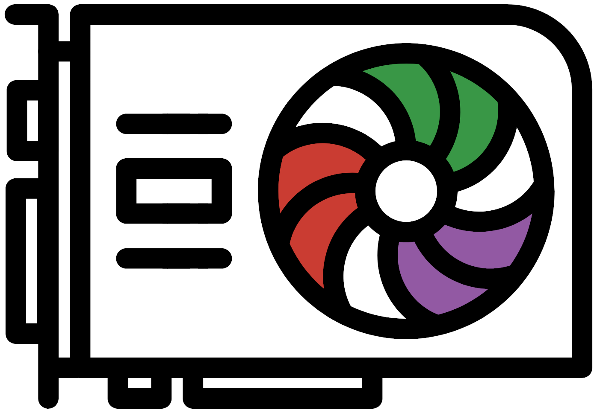

Drag to zoom. Click a run to compare it with the run before. Lines mark changes to the setup; hover them for details.

JuliaGPU PerformanceDrag to zoom. Click a run to compare it with the run before. Lines mark changes to the setup; hover them for details.